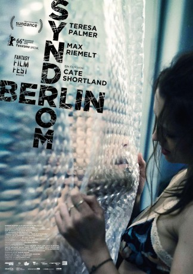
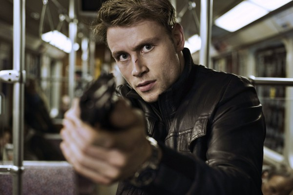
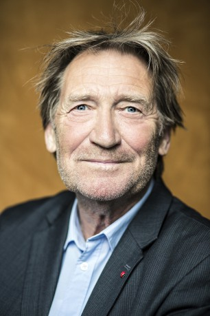

#7072 Berlin Syndrom
 
 IMDB-Wertung: 6.3 / 10
IMDB-Wertung: 6.3 / 10  Metascore: 70
Metascore: 70 
Die australische Fotojournalistin Clare macht als Backpackerin Urlaub in Berlin, wo sie den ebenso netten wie charmanten Englischlehrer Andi kennenlernt. Zwischen den beiden sprühen die Funken und sie verabreden sich zu einem gemeinsamen Sightseeing-Trip durch die Stadt, der in einen heißen Flirt mündet. Doch nach einer romantischen Nacht gibt es für Clare ein unerfreuliches Erwachen: Andi liegt nicht neben ihr. Zunächst denkt die junge Frau, ihr Liebhaber von letzter Nacht habe sich aus dem Staub gemacht, ohne sich zu verabschieden, doch schnell wird ihr klar, dass die Wahrheit noch viel unangenehmer ist: Andi hat sie in der Wohnung eingesperrt und hat nicht vor, sie jemals wieder gehen zu lassen. Für Clare ist dies der Beginn eines nervenzerreißenden Horrortrips…
Jahr: 2017
Dauer: 111 Minuten
FSK: 16
Land: Australien Studio: Curzon Artificial EyeTonspuren: DTS - ,
Untertitel: Deutsch,
Auflösung: 1080p (1920x808) Größe: 4956 MB
Genre: Thriller, Horror, Drama, Mystery
Regisseur: Cate Shortland
Drehbuch: Shaun Grant
Soundtrack:
Darsteller:
- Teresa Palmer als Clare
-  Max Riemelt als Andi
-  Matthias Habich als Erich
- Lucie Aron als Elodie Zadikan
- Maia Absberg als Bar Member
- Cem Tuncay als Passenger
- Emma Bading als Franka Hummels
- Elmira Bahrami als Jana
- Christoph Franken als Peter
- Nassim Avat als Aron Hurwitz
- Malin Steffen als Swedish Girl
- Thuso Lekwape als Billy Dharma
- Lara Marie Müller als Silke
- Mariella Josephine Aumann als Young Girl
- Rene Barra als Coal Man
- Viktor Baschmakov als Benni
- Elias Esser als Boy 1
- Morgane Ferru als Young Tourist
- Claude Heinrich als Boy 2
- Ray Hounsell als Guy
- Engin Karavul als Stall Owner
- Kristina Kostiv als Russian Girl
- Nadine Peschel als Mother
- Matthias Russel als Jakob
- Charly Thorn als Young Woman
- Vitus Wieser als Policeman
- Mascha Wolf als Mascha
- Peter Young als Squatter
Datei: X:\2017(A-F)\Berlin Syndrom (2017, FSK16, 1920x808).mkv seit 21.09.2017
Festplatte: HD 2017(A-Z)-2018(A-F)
 Es gibt insgesamt 152 Filme in der Gruppe '2017(A-F)'
Es gibt insgesamt 152 Filme in der Gruppe '2017(A-F)'